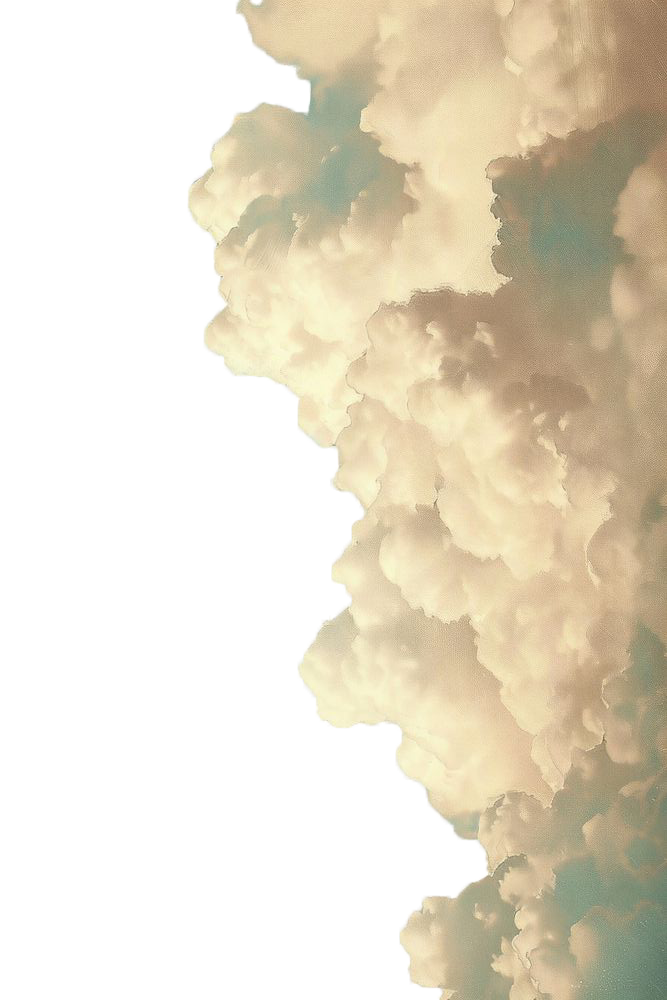
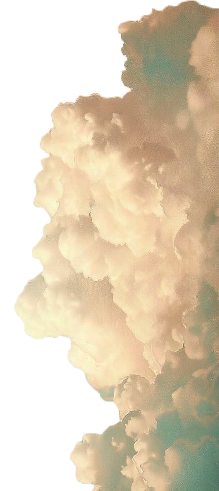
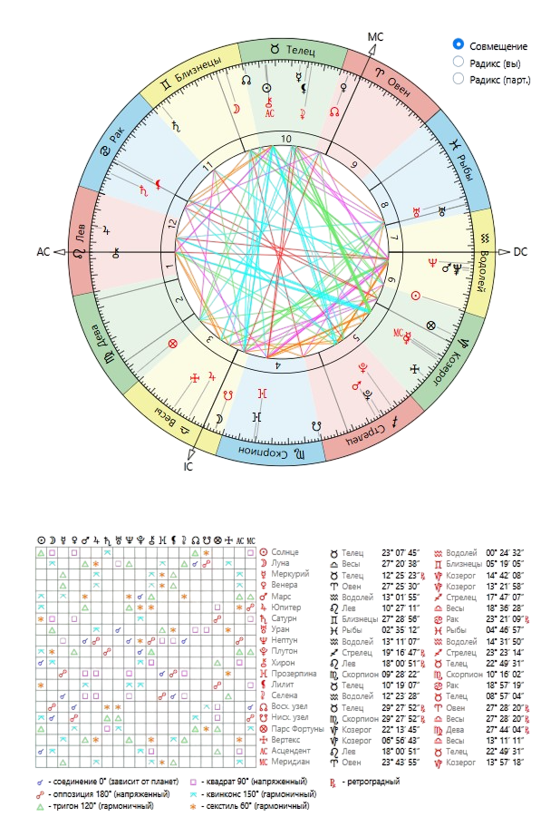
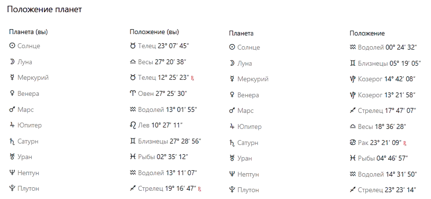

Тригон Солнце — Солнце
Этот аспект считается одним из самых благоприятных для дружбы, потому что между вами легко возникает естественное взаимопонимание. У вас много общих интересов, похожие взгляды на жизнь и схожее восприятие важных вещей.
Вам комфортно вместе проводить время, поддерживать друг друга и двигаться в одном направлении. Вы умеете вдохновлять друг друга, усиливать уверенность и помогать раскрывать сильные стороны личности.
Такая дружба часто строится легко и естественно, без лишнего напряжения, а взаимная поддержка помогает сохранять ее крепкой и долгой.
Секстиль Солнце — Сатурн
Этот аспект говорит о крепкой и надежной дружбе, в которой много взаимного уважения, поддержки и чувства ответственности друг за друга. Вы хорошо дополняете друг друга: одна помогает сохранять порядок, стабильность и уверенность, а другая вдохновляет на развитие, новые идеи и более смелое самовыражение.
Такая дружба особенно хорошо проявляется в совместных делах, учебе, работе и любых проектах, где важны организованность и доверие. Вы умеете поддерживать друг друга не только эмоционально, но и в реальных жизненных задачах.
Между вами может быть ощущение надежности и спокойствия — именно той дружбы, которая проходит проверку временем.
Тригон Меркурий — Меркурий
Этот аспект дает отличную интеллектуальную совместимость и легкость в общении. Вам просто понимать друг друга, обсуждать любые темы и находить общий язык даже в сложных вопросах.
Разговоры между вами могут быть долгими, интересными и вдохновляющими. Вас объединяют любознательность, желание развиваться, учиться новому и делиться своими мыслями.
Такой аспект особенно хорош для дружбы, учебы, путешествий, совместных проектов и любых дел, где важны идеи, взаимопонимание и поддержка.
Тригон Меркурий — Венера
Этот аспект делает ваше общение очень приятным, теплым и гармоничным. Между вами легко возникает взаимная симпатия, чувство комфорта и умение понимать друг друга не только логически, но и эмоционально.
Вас могут объединять творчество, эстетика, искусство, общие интересы и легкость в совместном общении. Вы умеете поддерживать друг друга, смотреть на многие вещи проще и с юмором, что делает дружбу особенно легкой и приятной.
Такой аспект помогает создавать очень красивую, спокойную и вдохновляющую дружескую связь, в которой много душевного тепла.
Квадрат Меркурий — Нептун
Этот аспект может создавать небольшую путаницу в общении: одна из вас мыслит более конкретно и рационально, а другая больше доверяет интуиции, эмоциям и внутреннему ощущению ситуации.
Иногда из-за этого может казаться, что одна слишком практична, а другая — слишком мечтательна. Возникают недосказанности, разные ожидания или ощущение, что вас понимают не совсем так, как хотелось бы.
При открытом и спокойном общении этот аспект помогает развивать терпение, чуткость и способность принимать разные взгляды на мир.
Квадрат Венера — Сатурн
Этот аспект делает дружбу более серьезной и сдержанной, чем легкой и спонтанной. Иногда между вами может ощущаться дистанция или сложности в открытом проявлении эмоций, особенно в начале общения.
Одна из вас может казаться более строгой и требовательной, а другая — более свободной и эмоциональной. Из-за этого временами бывает непросто сразу почувствовать полное взаимопонимание.
Но именно такой аспект помогает строить крепкие, взрослые и надежные отношения, где ценятся не громкие слова, а реальные поступки, верность и стабильность.
Тригон Венера — Плутон
Этот аспект делает дружбу глубокой, искренней и очень значимой для обеих. Между вами может быть сильное доверие, ощущение внутренней близости и готовность поддерживать друг друга даже в непростые периоды жизни.
Вы помогаете друг другу лучше понимать себя, становиться увереннее и эмоционально сильнее. Одна может мягко привносить гармонию и спокойствие, а другая — мотивировать на внутренние перемены и личностный рост.
Такая дружба часто ощущается как важная и судьбоносная: в ней много поддержки, честности и настоящей вовлеченности в жизнь друг друга.
Секстиль Марс — Марс
Этот аспект говорит о хорошем балансе энергии и действий между вами. Вы умеете работать в одном ритме, поддерживать друг друга в делах и легко находить общий подход к совместным задачам.
Обе вы активные, целеустремленные и умеете доводить начатое до конца. При этом между вами может быть здоровая дружеская конкуренция, которая не разрушает, а наоборот помогает расти, развиваться и становиться сильнее.
Такая совместимость особенно хороша для дружбы, совместных проектов, спорта, активного образа жизни и любых дел, где важны энергия и движение вперед.
Тригон Марс — Юпитер
Этот аспект дает очень сильную энергетику совместных действий. Вы легко вдохновляете друг друга, поддерживаете в целях и умеете создавать ощущение движения вперед.
Вместе вам хорошо заниматься учебой, работой, спортом, путешествиями и любыми активными делами, где важны энергия, мотивация и желание развиваться. Вы умеете подбадривать друг друга и помогать не останавливаться на полпути.
Такая дружба часто становится источником роста, уверенности и ощущения, что рядом человек, который действительно верит в тебя.
Соединение Марс — Нептун
Этот аспект делает дружбу эмоционально насыщенной и интуитивной. Вы можете тонко чувствовать настроение друг друга, поддерживать в сложные моменты и вдохновлять на внутренние перемены.
Иногда одна из вас действует более прямо и активно, а другая — мягче, через ощущения и внутреннее понимание ситуации. Из-за этого возможны недопонимания, если ожидания не проговариваются открыто.
Но в положительном проявлении этот аспект помогает вам объединять практичность и интуицию: одна помогает действовать увереннее, а другая — чувствовать глубже и видеть ситуацию шире. Такая дружба часто строится на внутреннем доверии и взаимной поддержке.
Оппозиция Юпитер — Нептун
Этот аспект показывает, что в дружбе могут возникать разные взгляды на мечты, ожидания и жизненные идеалы. Одна из вас может быть более практичной и стремиться к конкретным результатам, а другая — больше доверять вдохновению, интуиции и внутренним ощущениям.
Иногда из-за этого появляются завышенные ожидания, недопонимания или разница в восприятии одних и тех же ситуаций. Важно сохранять честность и не строить лишних иллюзий друг о друге.
При хорошем взаимопонимании этот аспект помогает соединять мечты с реальностью: одна вдохновляет, а другая помогает воплощать идеи в жизнь.
Оппозиция Сатурн — Плутон
Этот аспект может делать дружбу непростой в вопросах контроля, ответственности и личных границ. Иногда между вами может возникать ощущение, что каждая по-своему старается отстоять свою позицию и не хочет уступать.
Это может проявляться в спорах о принципах, взглядах на серьезные решения или в желании доказать свою правоту. Но такой аспект также помогает учиться уважать силу характера друг друга и строить отношения на честности и зрелости.
Если избегать давления и больше доверять друг другу, эта связь может стать очень устойчивой и научить обеих важным жизненным урокам.
Соединение Уран — Уран
Этот аспект особенно часто встречается у людей примерно одного возраста и говорит о схожем взгляде на жизнь, интересах и жизненных этапах. Вы легко понимаете друг друга, потому что проходите через похожие события и внутренние изменения.
В вашей дружбе много свободы, легкости и ощущения, что рядом человек “на одной волне”. У вас могут быть похожие цели, взгляды на будущее, общее окружение и совместные увлечения.
Такой аспект помогает формировать крепкую дружбу, основанную на взаимопонимании, поддержке и ощущении настоящего товарищества.
Соединение Нептун — Нептун
Этот аспект дает вам тонкое интуитивное понимание друг друга и схожее восприятие многих жизненных тем. Вы можете одинаково чувствовать атмосферу, настроение людей и важные внутренние процессы, даже если не всегда говорите об этом вслух.
Ваша дружба часто строится спокойно и естественно, без лишнего напряжения. Между вами может быть ощущение мягкой внутренней связи, когда многое понятно без слов.
Этот аспект помогает создавать стабильные, доверительные отношения, в которых важны поддержка, принятие и эмоциональная чуткость.
Соединение Плутон — Плутон
Этот аспект говорит о глубоком взаимопонимании на уровне жизненного опыта, взглядов и внутренних стремлений. У вас могут быть похожие ценности, схожее отношение к важным переменам и понимание серьезных жизненных процессов.
Такая дружба часто ощущается как значимая и сильная: вы способны поддерживать друг друга не только в повседневных вопросах, но и в важных этапах личного роста.
Между вами может быть чувство надежности, внутренней силы и понимания без необходимости многое объяснять. Это аспект дружбы, которая проходит через время и помогает становиться сильнее.
Общий вывод по совместимости
Ваша совместимость выглядит очень сильной и гармоничной именно в формате дружбы. Между вами много аспектов, которые дают естественное взаимопонимание, интеллектуальную близость, поддержку и ощущение, что рядом действительно “свой” человек.
Вы легко находите общий язык, умеете вдохновлять друг друга, поддерживать в важных жизненных этапах и вместе двигаться к своим целям. Даже там, где возникают различия во взглядах или характерах, они скорее помогают вам расти и учиться лучше понимать друг друга.
Это дружба с большим потенциалом на долгие годы — теплая, надежная и глубокая. В ней есть и легкость общения, и серьезная внутренняя опора, а главное — искреннее желание быть рядом и поддерживать друг друга.